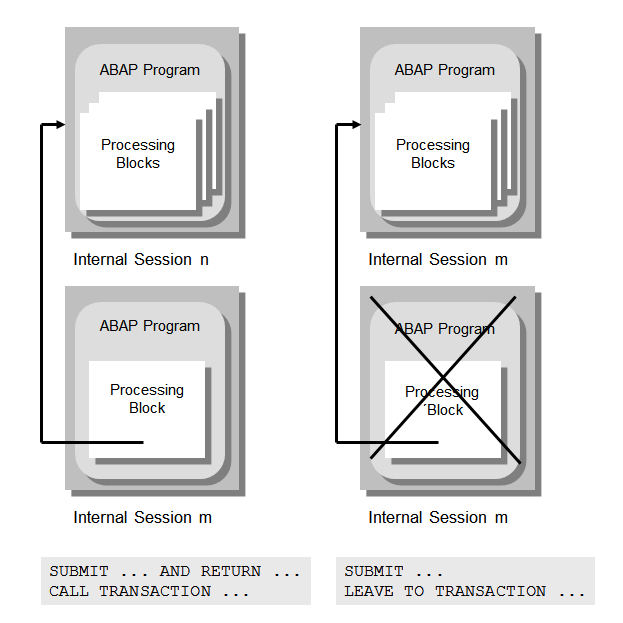

SAP NetWeaver AS ABAP Release 751, ©Copyright 2017 SAP AG. All rights reserved.
ABAP - Keyword Documentation → ABAP - Reference → Calling and leaving program units →Calling Programs
If permitted by the package concept, each processing block of ABAP program makes it possible to call
. When a program is called, the calling program can be exited either temporarily or completely.

For a temporary exit from the calling program (left side of the figure), the called program is started in a new internal session. The internal session of the calling program is preserved. The calling program and the called program represent a call sequence. Within a call sequence, the programs have shared access to the ABAP Memory (statements IMPORT FROM MEMORY and EXPORT TO MEMORY). A call sequence can have a maximum of nine internal sessions. If this maximum is exceeded, the program terminates and the entire call sequence is deleted.
When the calling program is completely exited (right side of the figure), the called program is started in a new internal session, which replaces the internal session of the calling program.
A program that creates an internal session when it is called represents the main program of the
main program group in the internal session.
Note
When the runtime environment loads a called program, the event LOAD-OF-PROGRAM is triggered in that program.